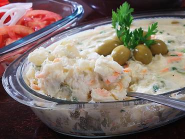
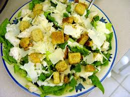
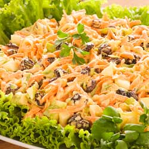

Maioneses e Saladas
- 
- Maionese de Legumes
- Deliciosa maionese de legumes, contendo batata, cenoura, palmito, milho e ervilha.
- Autor: Giovana Gido
- Avaliação: 3
- 73 pessoas avaliaram essa receita
- 
- Salada Ceasar
- Variedade de folhas com legumes ao molho caesar.
- Autor: Gabriela Martins
- Avaliação: 4
- 81 pessoas avaliaram essa receita
- 
- Salpicão de Frango
- Maionese caseira com legumes e frango, muito gostoso!
- Autor: Letícia Campos
- Avaliação: 4
- 59 pessoas avaliaram essa receita